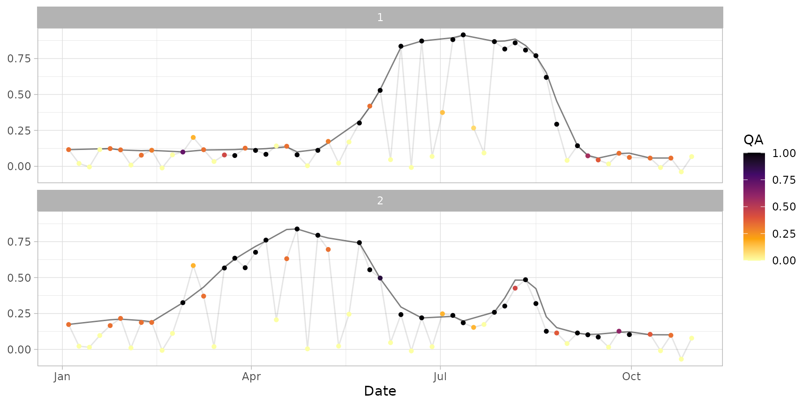

Sample time series obtained from the dataset ts_raw,
created following the example provided in the smooth_s2ts()
documentation.
It is used in the documentation of function fill_s2ts().
data(ts_smoothed)
A s2ts object with 60 dates (in the period 2020-01-01 to
2020-09-30) and 2 IDs (corresponding to sampleroi polygons).
#> A smoothed s2ts time series with 60 dates and 2 IDs. #> Date Orbit Sensor 1 2 #> 1: 2020-01-04 022 2B 0.11606015 ○ 0.1740709 ○ #> 2: 2020-01-09 022 2A NA ○ NA ○ #> 3: 2020-01-14 022 2B NA ○ NA ○ #> 4: 2020-01-19 022 2A NA ○ NA ○ #> 5: 2020-01-24 022 2B 0.12343408 ○ 0.2060596 ○ #> --- #> 56: 2020-10-10 022 2B 0.05760022 ○ 0.1021135 ○ #> 57: 2020-10-15 022 2A NA ○ NA ○ #> 58: 2020-10-20 022 2B 0.05767390 ○ 0.1016156 ○ #> 59: 2020-10-25 022 2A NA ○ NA ○ #> 60: 2020-10-30 022 2B NA ○ NA ○ #> #> Quality flags: ● [1] ◕ [0.9,1) ◑ [0.75,0.9) ◔ [0.5,0.75) ○ [0,0.5)#> id date orbit sensor value qa rawval #> 1 1 2020-01-04 022 2B 0.1160602 0.33 0.116133333 #> 2 1 2020-01-09 022 2A NA 0.00 0.020170833 #> 3 1 2020-01-14 022 2B NA 0.00 -0.004372917 #> 4 1 2020-01-19 022 2A NA 0.00 0.116368750 #> 5 1 2020-01-24 022 2B 0.1234341 0.33 0.123387500 #> 6 1 2020-01-29 022 2A 0.1137065 0.33 0.114379167